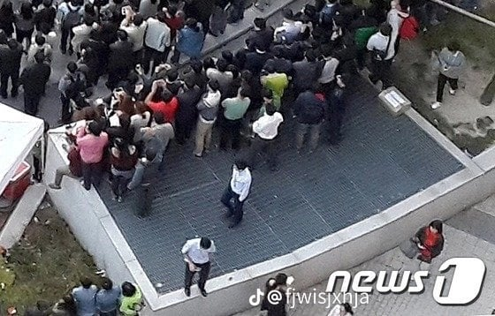
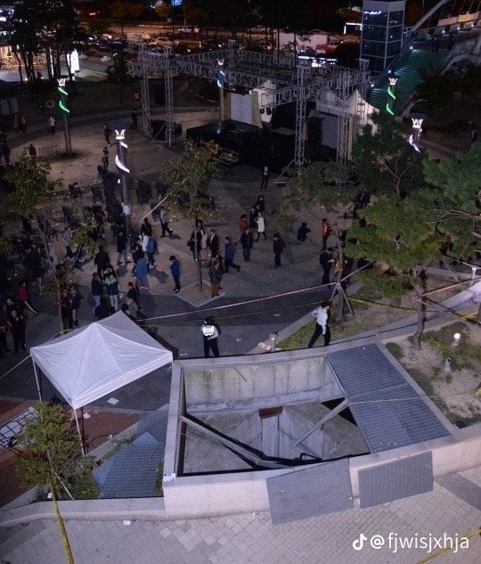
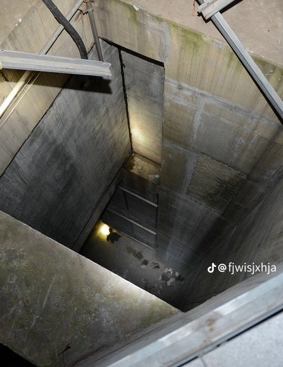
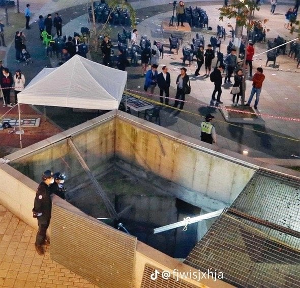
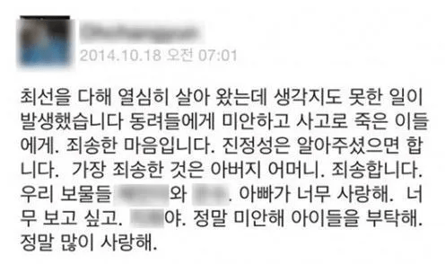

2014년도에 있었던 최악의 안전불감증 사고
2번째 짤 보면 무게때문에 휘어져 있음
결국 무게를 못이겨서 추락 16명 사망 11명 부상
행사 담당자는 다음날 죄책감 때문에 결국 자살





2014년도에 있었던 최악의 안전불감증 사고
2번째 짤 보면 무게때문에 휘어져 있음
결국 무게를 못이겨서 추락 16명 사망 11명 부상
행사 담당자는 다음날 죄책감 때문에 결국 자살

솔직히 나도 저 시절에 환풍구 위로 올라가서 논적 있긴함
근데 지가 자살까지 할 정도의 책임자는 아닌데 오바 했네? 뻔히 실무자들 집행유예 받았는데, 살자를 했어도 부실공사 한 넘이 했어야지
돌아가신게오바라고?말꼬라지보소
말 ㅈ같이하는 재주있네 뒤져라 넌
유서 너무 슬프네...자식도 있는거 같은데...ㅠㅠ
죄책감을 왜가짐? 저길 올라간게 병신들이지
사람 올라가라 만든게 아닌데 올라간 것들도 문제지만
결국 안전측면에서 따졌을 때 저런 위험요인은 차단조치 등 사전예방을 했어야하긴 함
안전은 개병신 장애인새끼도 안다치게 다방면으로 위험요인 캐치하고 사전 예방하는 것이거든
댓글만 봐도 역시 엠생찐따새끼들은 존나 많아 ㅋㅋ
저거보고 절대 저런곳위로 안올라감
병신같은게 그냥 무대 구경만 하면되지 동영상이나 사진은 대체 왜찍음? ㅋㅋㅋㅋㅋㅋㅋ
인터넷에가면 더 좋은 화질 더 좋은 구도로 찍은 영상이 한트럭인데
개병신같네 ㅋ
웃긴게 아직도 인도 내에 환풍구가 있는데 차단막이나 안전표시가 없는 곳이 있음.
책임을 행사 담당자가 다 져야 했던건가? 안타깝네